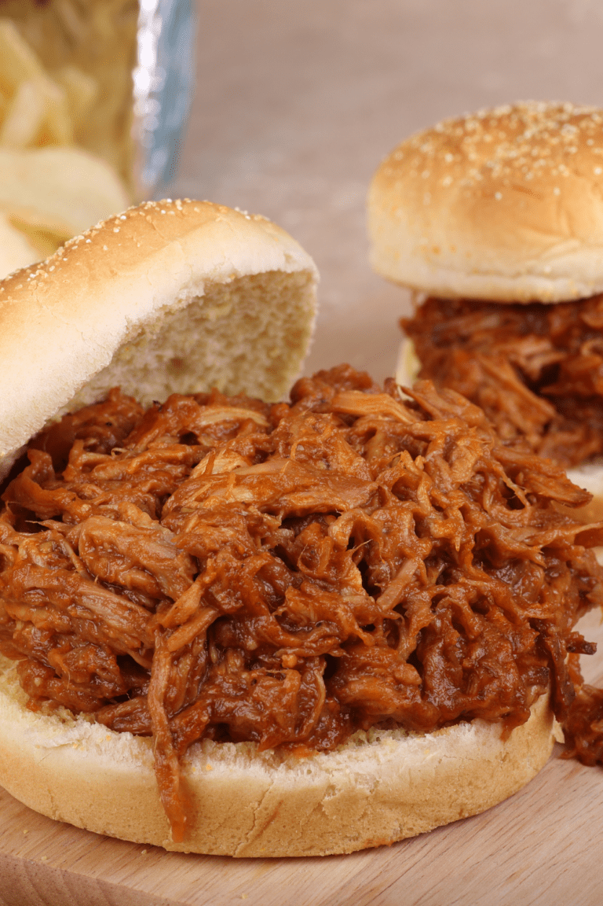

Coca Cola Pulled Pork

Description
Sweet, savory and easy slow cooker pulled pork recipe. The Coca-Cola adds a sweeter taste. I'll also add liquid smoke and barbecue sauce to give it that smokey classic bbq taste!
Ingredients
- 4-5 lbs of pork roast (shoulder or butt)
- 2 teaspoons garlic, minced and dehydrated
- 2 teaspoons onion, minced and dehydrated
- 1/4 teaspoon black pepper, ground
- 1/4 teaspoon cayenne pepper, ground
- 1 teaspoon liquid smoke
- 1 liter Coca-Cola (or other soda)
- 20 ounces barbecue sauce
Steps
- Place pork roast in a 5-quart Crockpot. Season the pork with garlic, onion, and black and cayenne peppers. Pour in the liquid smoke and Coke until they cover the roast.
- Set the Crockpot to low heat and cook for 8 to 10 hours.
- Transfer the roast into a serving platter. Discard the bones and trim the fat. Shred the pork into thin strands with 2 forks. Coat with barbecue sauce. Serve and enjoy!